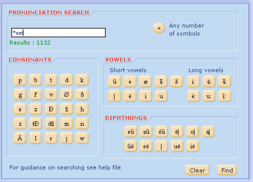

Open the pronunciation search function from the search menu. You can use this function to find words with a particular sound. In this example the user wants to search with all words that end with the sound /ent/. Because the first letters are unknown, use an * to stand for any number of symbols. You can use the * symbol only at the beginning or at the end of the search request. Be sure to use the * only once in each search.
search request | result |
*Is | Lists all words ending with the sound /Is/: abyss, avarice, actress … |
ret* | Lists all words starting with the sound /ret/: retina, retribution, wretch … |

When you move your mouse over a phonetic symbol and leave it for a moment, a small help window will appear indicating the sound represented.